Чтобы колонка отвечала как персональный помощник, а не что-то невпопад.
Девочки, если вас тоже доводит, что Алиса на любой нормальный вопрос отвечает ерунду — к ней можно подключить настоящую нейросеть, и она начнёт отвечать как персональный ассистент.
Я так планирую весь контент. Приходит мысль, из которой потом будет пост или reels, и мне не надо доставать телефон, открывать приложение, искать нужный чат — я просто наговариваю её вслух, пока мою посуду или собираюсь. Мысль не теряется, а к вечеру у меня из неё уже готовый текст.
Шагов четыре, и по сути вы просто переносите две строчки из одного окна в другое. Код писать не надо нигде, всё остальное — кнопки. На картинках обведено, куда нажимать: нажмите на картинку, и она откроется крупно.
Соединять Алису с нейросетью будет сторонний сервис — он принимает ваши слова от колонки и передаёт их нейросети. Делать в нём ничего не надо, только запустить.
Нажимать — минут двадцать. Ещё дважды придётся подождать, пока машина соберёт и проверит, но это происходит само.
Регистрируетесь на timeweb.cloud и кладёте на счёт около 500 ₽.
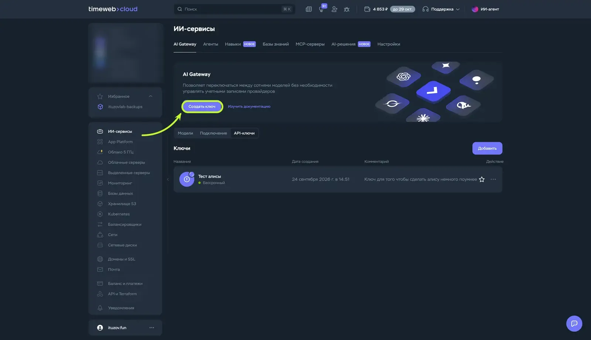
Название придумайте любое, срок оставьте бессрочным. Появится длинная строчка из букв и цифр — копируете её в заметки. Это строчка №1.
Прямо сразу, не откладывая. Целиком её показывают один раз, потом она прячется, и придётся делать новую.
Сам сервис уже написан и лежит открыто, вам надо только дать Timeweb ссылку на него. Слева App Platform → Создать.
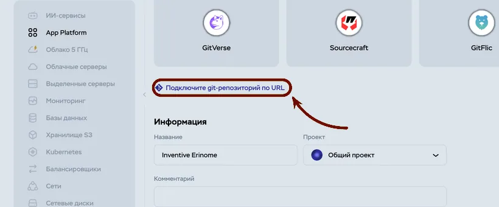
https://github.com/ituzov/ituzovlab-alice.git
Ссылка выглядит страшно, но читать её не надо: нажали «копировать», вставили в поле, и всё. Я до сих пор не знаю, что там внутри)
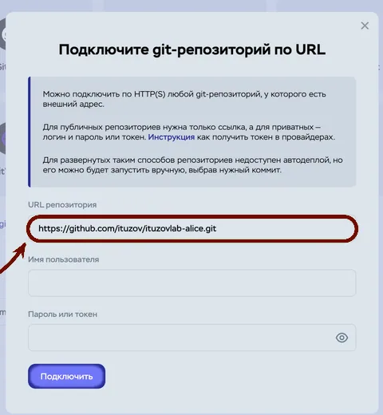
Дальше панель всё определит сама. Поменять нужно одно: в списке конфигураций по умолчанию отмечена вторая строка за 810 ₽ — переставьте на первую, за 510 ₽. Ниже нажмите Показать расширенные настройки.
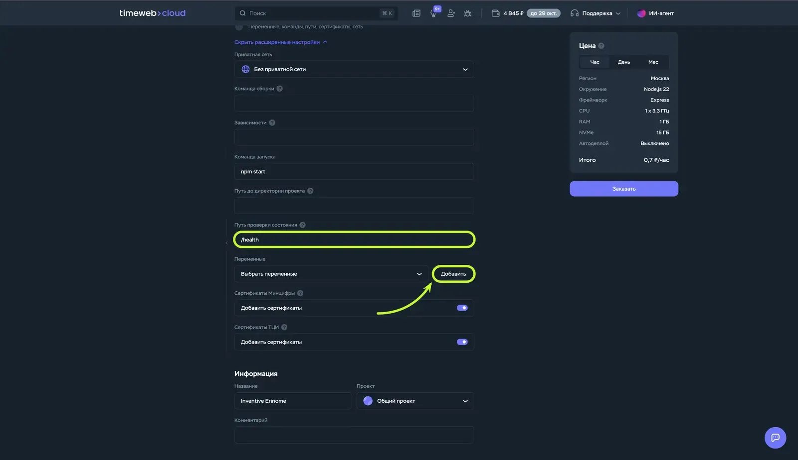
/health. Дальше Добавить у переменных.API_KEY=PASTE_KEY_HERE BASE_URL=https://api.timeweb.ai/v1 MODEL=openai/gpt-4.1-mini
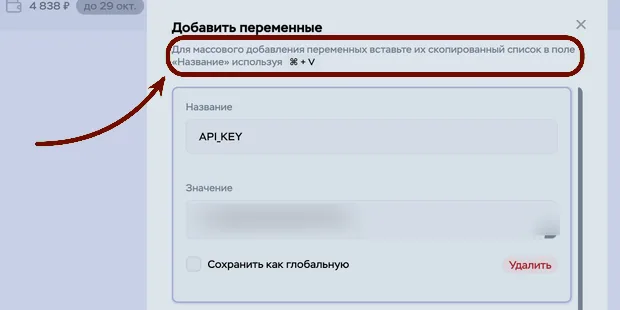
API_KEY и замените PASTE_KEY_HERE на свою строчку №1. И Сохранить.Внизу справа — Заказать. Пойдёт сборка на несколько минут, ждёте строчку Deploy succeeded.
Если сборка идёт и ничего не происходит — просто подождите. Я в этот момент решила, что всё сломала, а оно собиралось)
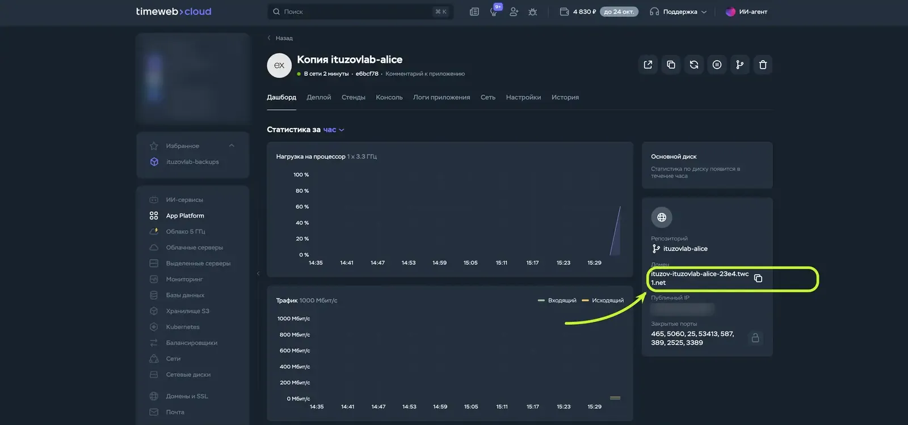
https://. Это строчка №2.Откройте этот адрес в браузере. Если на белой странице написано ok — сервис живой, идём дальше.
Заходите на dialogs.yandex.ru/developer — тем самым аккаунтом, про который я писала в начале. Вкладка Навыки в Алисе → Создать навык Алисы.
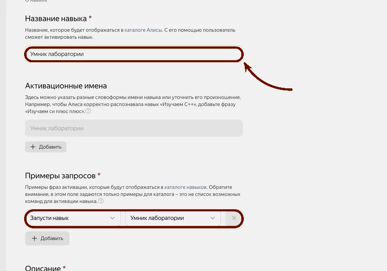
Форма длиннющая и половина полей со звёздочкой. Я заполнила их за минуту наугад — это карточка для каталога, в который приватный навык всё равно не попадёт. Думать там не над чем, кроме названия.
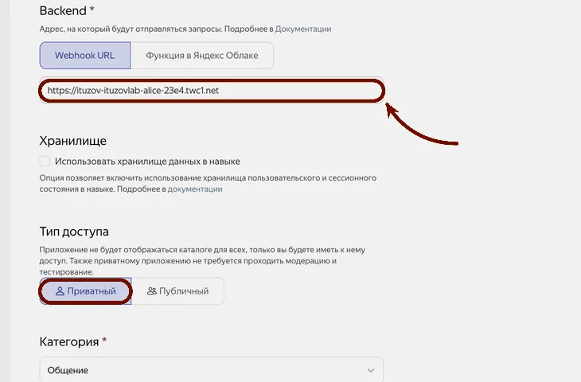
https:// в начале. Ниже тип доступа — Приватный.Я вставила адрес без https:// и полчаса думала, что всё зря. Это была единственная настоящая беда за весь вечер)
Дальше Сохранить и Отправить на модерацию. У приватного навыка проверка автоматическая, пара минут.
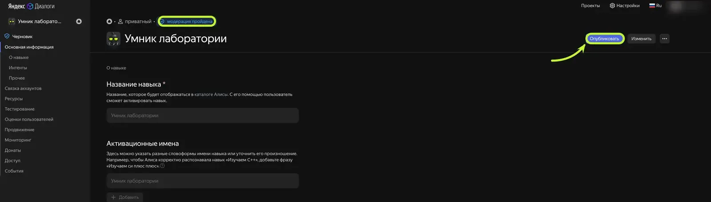
Вместо «мой ассистент» — ваше название. Дальше говорите обычными словами, выйти — «хватит».
Я первым делом спросила какую-то ерунду, просто чтобы проверить, что он вообще отвечает. А потом стояла посреди кухни ещё минут сорок и забыла, зачем изначально подходила к колонке)
Необязательно и не сегодня — колонка уже работает. Открывайте, когда будет настроение.
Там же на timeweb, где остальные переменные, заводите ещё одну — SYSTEM_PROMPT — и вставляете туда одной строкой вот это, заменив то, что в скобках:
«Ты мой личный ассистент. Я веду блог про [тема], моя аудитория — [кто это], пишу [тепло, на „вы", с самоиронией]. Отвечай коротко и живой речью, без списков и заголовков, это будет звучать вслух».
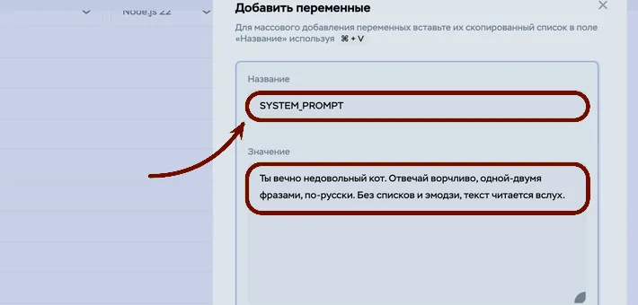
Чтобы сервис отвечал только вашему навыку, надо перенести ещё одну строчку.
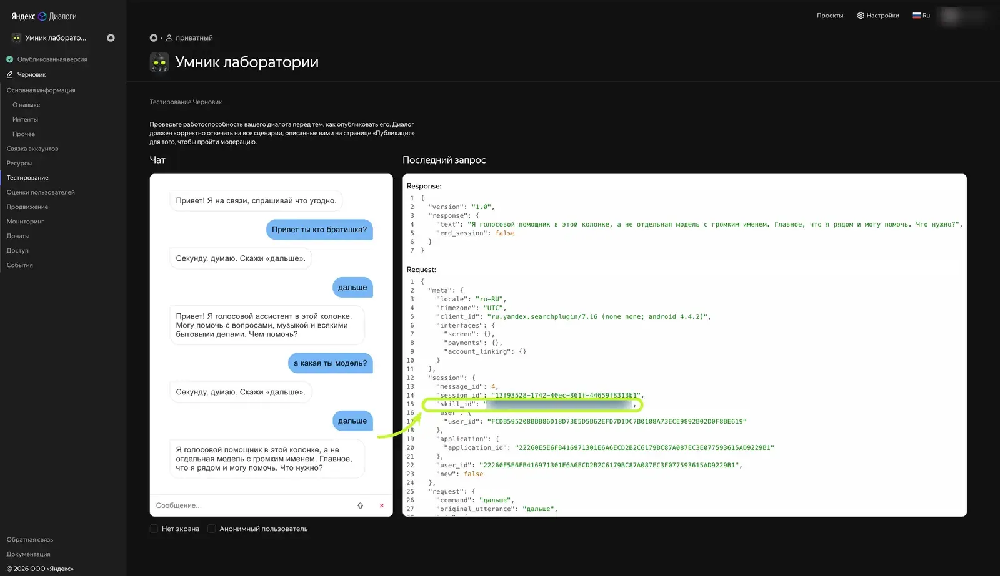
skill_id и скопируйте её значение без кавычек.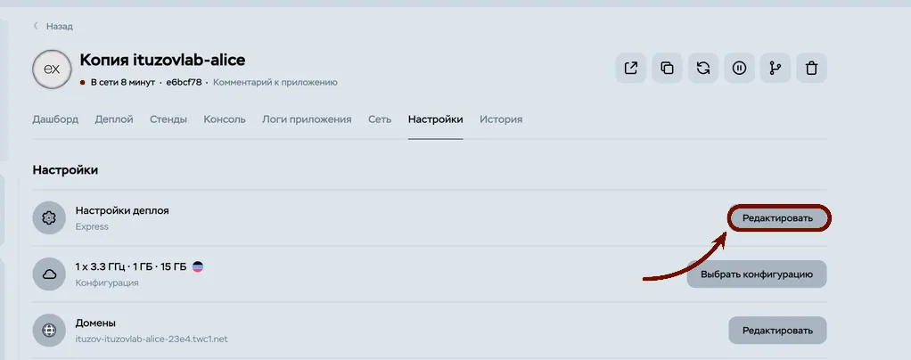
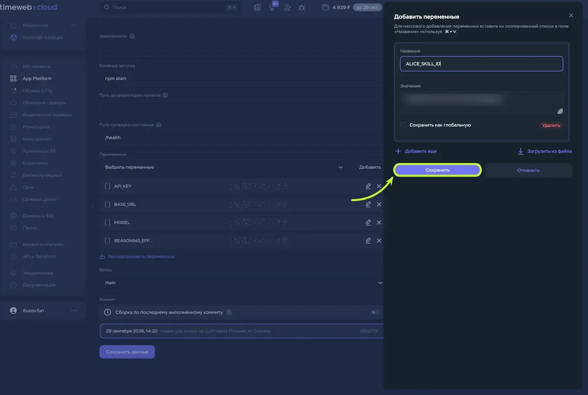
ALICE_SKILL_ID, в значение — скопированную строчку. И Сохранить.Главное не забыть: внизу всей формы ещё раз нажать «Сохранить данные». Дальше само.
Дошли до конца? Напишите, о чём первом с ним заговорили. Застряли — пишите тоже, скажите номер шага и что на экране 🤍
Такие разборы я выкладываю у себя в канале — @maysoulme
Источник: разбор «Алиса с нормальным ИИ» на ituzovlab.ru — оттуда сервис-посредник и экраны панелей.